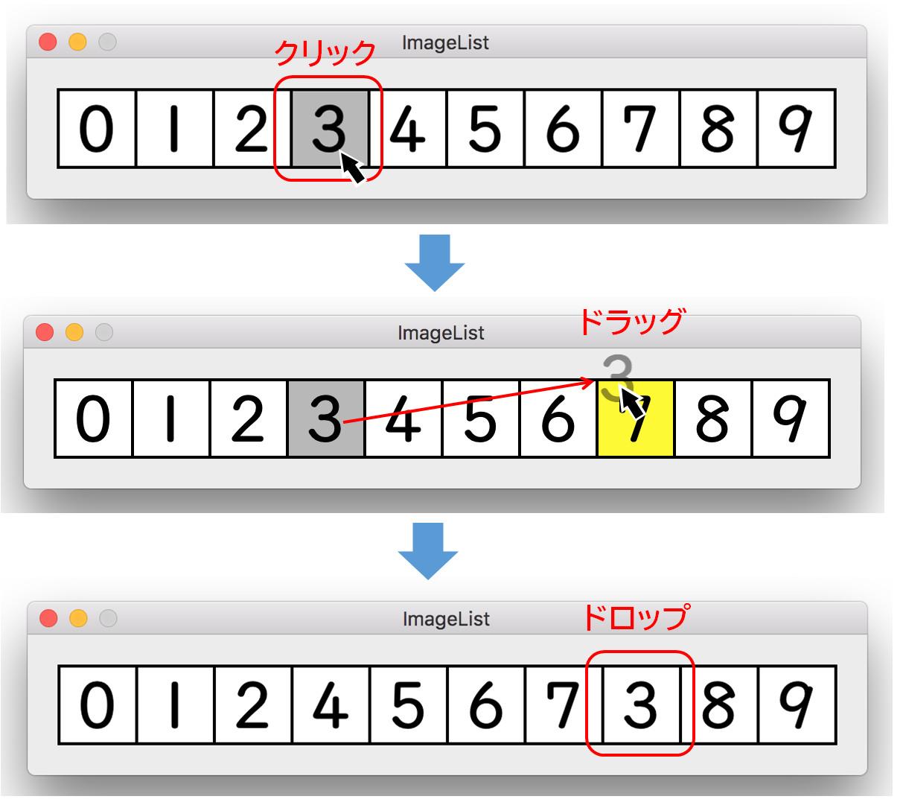

リスト上のビューをドラッグ＆ドロップにより移動する
アプリケーションの動き
0から9の数字を表示した10個のビューが横に並ぶ。ある数字をドラッグして、他所の数字の上にドロップすると、ドロップした数字がその位置に割り込み、リストの数字がの並びが変わる。ビューのハイライト（背景色）を、ドラッグ元はグレーに、ドラッグ先は黄色に変わる。

実装方法
UAListViewオブジェクトは、10個のUAViewオブジェクトを保持する。UAViewオブジェクトは、プロパティとして数字を文字列に持ち、ビューに表示（drawRect）する。
UAViewオブジェクトをドラッグして別のビューにドロップすると、ドラッグ元の数字がドラッグ先の数字に置き換わり、それに伴って影響のある数字は左右にスライドし並べ替わる。これらの処理は、UAViewオブジェクトの配列をプロパティに持ったUAListViewオブジェクトが行う。
UAViewクラス
インタフェース宣言
ビューの並べ替えは、ビューを保持するビューリストクラス（UAViewList）のデリゲートが受け持つ。UAViewDelegateプロトコル
ビューのイニシャライザ
ビューの並べ替えは、ビューを保持するビューリストクラス（UAViewList）のデリゲートが受け持つ。UAViewDelegateプロトコル
ビューの並べ替えは、ビューを保持するビューリストクラス（UAViewList）のデリゲートが受け持つ。
ビューの再表示（drawRect)
文字列を属性を設定して表示する。ドラッグの出発地または目的地のビューであれば、背景色を変更する。
ドラッグの出発地の処理（Dragging Source Protocol)
ドラッグセッションの開始
mouseDownイベントで、プロパティの数字（NSStringオブジェクト）をペーストボードに格納し、ドラッグセッションを開始する。
ドラッグする数字を元に、ドラッギングイメージ（ドラッグ操作でマウスカーソルに追随する画像イメージ）を作成する。NSImageクラスのlockFocusメソッドにより、NSImageオブジェクトに属性付き文字列を描画することができる。
ドラッグの目的地の処理（Dragging Destination Protocol)
ドロップの実行
performDragOperationメソッドの引数で渡されるNSDraggingInfoオブジェクトのdraggingSourceプロパティから、ドラッグ元のUAViewオブジェクトを参照することができるので、そこからプロパティの数字を取得している。ペーストボードに格納されているオブジェクトは利用していない。
このプロパティは、他アプリケーションからオブジェクトがドラッグされてきた場合 nilとなる。これを利用し、draggingEnteredメソッドで他アプリケーションから文字列がドラッグされてきた場合、無効にする処理を追加している。
UAListViewクラス
インタフェース宣言
イニシャライザ
10個のUAViewオブジェクトを作成し自身のビューに追加する。並べ替えのためにビューの配列を作成する。
デリゲートメソッド
ビューの並べ替えを行う。
ソースコード
アプリケーション制御
AppDelegate
ビュークラス
UAView
ビューリストクラス
UAListView